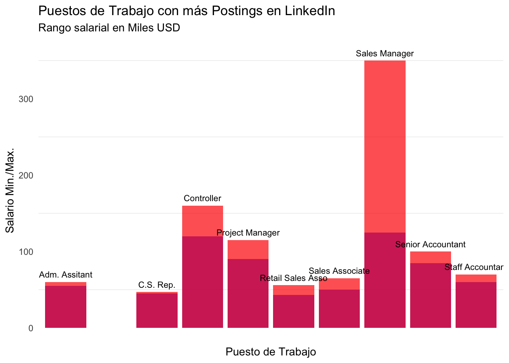

El objetivo de este proyecto es analizar y visualizar datos clave del mercado laboral actual (2023). Se pretende dar un corto vistazo y analizar tres puntos claves de este mercado: tendencias en la demanda laboral, las diferentes industrias y las habilidades más valoradas en el mercado.
Datos
Para realizar este análisis nos baseremos en la oferta laboral existente en LinkedIn. Más concretamente, nos centraremos en los postings que han sido públicados en la plataforma durante este año. La fuente principal recursos sera la carpeta LinkedIn Job Postings-2023, conjunto de datasets disponibles en Kaggle y del estudio Decoding the Job Market: An In-depth Exploration. Las tablas contienen información de 33 000+ postings de empleos en LinkedIn que han sido recolectados en diferentes periodos a lo largo de diferentes meses, así como datos complementarios asociadas a cada post sobre beneficios, skills, industrias, companías, etc. Ya que los datos fueron obtenidos a través de webscraping, existen muchos vacíos de información para ciertas observaciones. Este hecho ha hecho el trabajo un poco más desafiante y es un punto importante a considerar al momento de evaluar nuestros resultados. Para minimizar el impacto de la falta de información, se tomó un dataframe del estudio mencionado anteriormente el cual uso Python para resolver el problema de la inconsistencia de datos resultante del proceso de recolección (webscrapping). Por último, es necesario mencionar que la gran mayoría de las observaciones provienen de USA y que los salarios estan en USD.
Packages y Carga de Datos
Aquí se podran ver los paquetes y los datasets que han sido usados para el trabajo.
Descripción de variables principales: En todos los datasets, cada fila representa un post publicado en LinkedIn. Las características más importantes de cada post y que seran analizadas son:
job_id, title : Identificador y título de trabajo que para cada post
skills_desc: Habilidades requeridas para el puesto de trabajo
benefit: Beneficos ofrecidos para el trabajo correspondiente
company_id, name, employee_count: Identificador para una empresa, nombre y número de empleados respectivos
En dataset company_industries: Clasificación de cada compania (por company_id) a una industria.
industry: Nombre de la Industria.
El dataset job_skills: Contiene las habilidades requeridas para cada trabajo/post (por job_id). Las skills estan representadas con abreviaturas.
skill_abr: Habilidades requeridas para el puesto de trabajo (abreviatura).
1. Overview de las Posiciones con más Demanda
Para comenzar, analizaremos una métrica simple pero muy importante. Descubriremos cuáles son los títulos que aparecen más frecuentemente en los postings y que, por lo tanto, consideraremos como los trabajos más demandados. La siguiente tabla muestra los títulos con más posts en LinkedIn, el rango de salarios promedio para cada posición, el nivel de experiencia requerido y los beneficios más comunes asociados a cada título. El gráfico de barras muestra el promedio del salario máximo y mínimo para cada trabajo.
Código
#- Tidying#- 1)Sacamos top jobshigh_demand_vector <- job_posts_f %>%filter(title !="Sales Director [Owner/Operator]") %>%#Contiene datos vacioscount(title, sort =TRUE) %>%slice_head(n =10) %>%pull(title)high_demand_vector#> [1] "Retail Sales Associate" "Senior Accountant" #> [3] "Administrative Assistant" "Project Manager" #> [5] "Customer Service Representative" "Staff Accountant" #> [7] "Controller" "Area Supervisor" #> [9] "Sales Manager" "Sales Associate"high_demand <- job_posts_f %>%filter(title %in% high_demand_vector) %>%select(title, min_salary, max_salary, benefit, level) #-2) Sacamos los Datos que necesitamos#- Calculamos el promedio de (min-max salary) salary_ranges <- high_demand %>%filter(min_salary >500& max_salary >500) %>%#Consideramos salarios anuelesgroup_by(title) %>%mutate(min_salary_mean =median(min_salary, na.rm =TRUE)) %>%mutate(max_salary_mean =median(max_salary, na.rm =TRUE)) %>%select(title, min_salary_mean,max_salary_mean) %>%distinct()#- Creamos var benefit más común para cada title#- El mismo approach que antes#- df con los job_titles y los 3 beneficios más comuneshigh_demand_benefit <- high_demand %>%filter(benefit !="Not Specified") %>%#Quitamos los que no nos dan info. de los beneficioscount(title, benefit, sort =TRUE) %>%group_by(title) %>%slice_head(n =3) %>%summarize(most_common_benefits =toString(benefit)) %>%ungroup()# Creamos var level más común para cada titlehigh_demand_level <- high_demand %>%count(title, level, sort =TRUE) %>%group_by(title) %>%mutate(most_common_level =if_else(level =="Not Specified", lead(level), level)) %>%slice_head(n =1) %>%ungroup() %>%select(title, most_common_level)#- 3)Joinhigh_demand <- high_demand %>%select(title) %>%group_by(title) %>%distinct()high_demand_final <- high_demand %>%left_join(high_demand_benefit, by ="title") %>%left_join(high_demand_level, by ="title") %>%left_join(salary_ranges, by ="title")
Código
#----Tabla-------t1 <- high_demand_final %>%gt(rowname_col ="title", groupname_col ="most_common_level") %>% gtExtras::gt_theme_nytimes() %>%tab_header(title ="Trabajos con más Postings",subtitle ="Información General. Ordenado por Niveles" )%>%tab_footnote(footnote ="*Salarios en USD" ) %>%cols_label(title ="Título",most_common_benefits ="Beneficios Usuaes", most_common_level ="Nivel",min_salary_mean ="Sal_Min",max_salary_mean ="Sal_Max" ) %>%cols_move_to_end(columns = most_common_benefits)t1
Trabajos con más Postings
Información General. Ordenado por Niveles
Sal_Min
Sal_Max
Beneficios Usuaes
Mid-Senior level
Sales Manager
125000
350000
401(k), Medical insurance, Vision insurance
Senior Accountant
85000
100000
401(k), Vision insurance, Dental insurance
Customer Service Representative
45000
47000
401(k), Vision insurance, Medical insurance
Project Manager
90000
115000
401(k), Vision insurance, Medical insurance
Controller
120000
160000
401(k), Dental insurance, Medical insurance
Entry level
Sales Associate
50000
65000
401(k), Dental insurance, Disability insurance
Retail Sales Associate
43000
56000
401(k), Tuition assistance, Vision insurance
Administrative Assistant
55000
60000
401(k), Disability insurance, Medical insurance
Associate
Staff Accountant
60000
70000
401(k), Medical insurance, Dental insurance
Director
Area Supervisor
NA
NA
Medical insurance, Commuter benefits, Dental insurance
*Salarios en USD
Como muestra la tabla, los empleos más comunes en LinkedIn están en el ámbito ejecutivo. Vale la pena mencionar que el título de Sales Manager ofrece el mejor rango salarial (con una clara ventaja), seguido por Controller y Project Manager. Mientras que en la cima, Retails Associate y Customer Service Associate ofrecen los salarios más bajos. Además resalta que los beneficios más comúnmente ofrecidos son 401(k) (plan de jubilación para empleados activos en USA) y diferentes ventajas con seguros médicos. Finalmente se observa, que dentro de nuestro top,las posiciones que requieren un nivel de expertise de nivel medio-senior ofrecen más ofertas de trabajo.
Código
#---Plot------#- Modifico los Nombres muy largoshigh_demand_final$title <-ifelse(high_demand_final$title =="Customer Service Representative", "C.S. Rep.", high_demand_final$title)high_demand_final$title <-ifelse(high_demand_final$title =="Retail Sales Associate", "Retail Sales Asso", high_demand_final$title)high_demand_final$title <-ifelse(high_demand_final$title =="Administrative Assistant", "Adm. Assitant", high_demand_final$title)p1 <-ggplot(high_demand_final, aes(x = title, y = min_salary_mean/1000)) +geom_bar(stat ="identity", position ="dodge", fill ="blue", alpha =0.7) +geom_bar(aes(y = max_salary_mean/1000), stat ="identity", position ="dodge", fill ="red", alpha =0.7) +geom_text(aes(label = title, y = max_salary_mean/1000+10), position =position_dodge(width =0.9),size =3, color ="black") +labs(title ="Puestos de Trabajo con más Postings en LinkedIn",subtitle ="Rango salarial en Miles USD",x ="Puesto de Trabajo",y ="Salario Min./Max.") +theme_minimal() +theme(panel.grid.major =element_line(linetype ="blank"),axis.text.x =element_blank())p1

Nota: Para mantener el mayor nivel de consistencia posible, para los salarios se consideraron únicamente las observaciones que presentaban salarios anuales y se excluyeron las observaciones con salarios por hora. Razón por la que el rol de “Area Supervisor” no presenta datos del sueldo. Para ello, se consideró un valor arbitrario de 500, ya que se espera que ningún empleo ofrezca un salario anual menor a 500.
2. Industrias que Dominan LinkedIn?
Después de haber analizado cuáles son los trabajos que más comúnmente se ofrecen en LinkedIn, es importante entender que no todas las industrias tienen el mismo nivel de presencia en la plataforma. Por ese motivo, aquí presentamos las top 20 industrias que han sido más activas en LinkedIn (Basado en número de postings).
Como podemos observar, existen industrias que prácticamente monopolizan la plataforma. De hecho, si analizamos el gráfico nos daremos cuenta de que los trabajos relacionados con Staffing, IT y cuidados médicos (Healthcare) ocupan cerca del 70% del top 20.
A pesar de que muchas otras industrias estan en el top 20, se puede observar que su presencia en esta red es casi muy baja en comparación a las industrias dominantes y que por lo tanto no cuentan con el mismo nivel de postings que las industrias más presentes. Ejemplos de industrias con bajo número de publicaciones son la de bienes raices (2%) y la de seguros(1%).
Código
companies_data <- job_posts_f %>%select(company_id, name, employee_count)#- Joincompanies_data <- companies_data %>%left_join(comp_industries, by ="company_id")#- Función para ordenar los nombres de las industrias y evitar duplicados.tidy_industrie_names <-function(datos) { datos$industry <-ifelse(datos$industry =="Staffing and Recruiting", "Staffing & Recruiting", datos$industry) datos$industry <-ifelse(datos$industry =="Human Resources Services", "SHuman Resources", datos$industry) datos$industry <-ifelse(datos$industry =="Hospitals and Health Care", "Hospital & Health Care", datos$industry) datos$industry <-ifelse(datos$industry =="Information Technology & Services", "IT Services and IT Consulting", datos$industry) datos$industry <-ifelse(datos$industry =="Computer Software", "Software Development", datos$industry) datos$industry <-ifelse(datos$industry =="SHuman Resources", "Human Resources", datos$industry)return(datos) }companies_data <-tidy_industrie_names(companies_data)#- Tidyingcomp_plot_df <- companies_data %>%group_by(industry) %>%summarise(Total_Posts_Industry =n()) %>%slice_max(n =20, order_by = Total_Posts_Industry)#------ Pie Chart ---------plot_ly( comp_plot_df,labels =~industry,parents =~"",values =~Total_Posts_Industry, #Se muestra cuando pones maus encimaids =~industry,type ="sunburst",marker =list(colors ='Viridis'),textinfo ="label+percent entry",insidetextorientation ="radial") %>%layout(title ="Proporción de Postings en LinkedIn por Industria",subtitle ="Top 20 Industrias",font =list(size =14),margin =list(l =0, r =0, b =0, t =40),sunburstcolorway =c("#3498db", "#e43725", "#3acc2e", "#8f4bab", "#f39c12", "#1abc9c"),paper_bgcolor ="white",plot_bgcolor ="black",hoverlabel =list(bgcolor ="white",font =list(size =14) ) )
3.TOP Skills para las TOP Industrias
Finalmente, ahora que conocemos cuáles son las industrias con más presencia en LinkedIn, el paso final es descubrir cuáles son las skills más demandadas dentro de cada industria. Para ello, crearemos una red que mostrará las relaciones entre cada habilidad y las industrias mencionadas anteriormente. Para cada industria, se han calculado las 5 habilidades más relevantes. Los círculos representan las industrias principales, los cuadrados las skills y la importancia de cada habilidad para cada industria se representará con el thickness de las conexiones.
Código
#|warning: false# Network Graph Interactivo------#- Joinskills_data <- job_posts_f %>%select(job_id, title, company_id, name, employee_count) %>%left_join(comp_industries, by ="company_id") %>%left_join(job_skills, by ="job_id")#- Reformat names skills_data <-tidy_industrie_names(skills_data)#- Tidying: Sacamos las top 5 industries#Basandonos en número de poststop5_ind <- comp_plot_df %>%slice_max(n =5, order_by = Total_Posts_Industry)top5_ind_vector <- top5_ind$industry #- Filtramos las skills que estén en las top 5 indus.skills_data <- skills_data %>%filter(skill_abr !="OTHR") %>%filter(industry %in% top5_ind_vector)#- Cuantas veces aparece cada skill dentro de cada top industria. (Degree centrality) industry_degrees <- skills_data %>%group_by(industry, skill_abr) %>%summarise(Degree =n())#- Top N skills para cada industriatop_skills_by_industry <- industry_degrees %>%group_by(industry) %>%arrange(desc(Degree)) %>%slice_head(n =5) #------NETWROK --------------------#-Vignette: https://cran.r-project.org/web/packages/visNetwork/vignettes/Introduction-to-visNetwork.html#- Nodes#- Creamos nodes a partir de las columnas industry y skillsmy_nodes <-data.frame(id =unique(c(top_skills_by_industry$industry, top_skills_by_industry$skill_abr)),label =unique(c(top_skills_by_industry$industry, top_skills_by_industry$skill_abr)),group =ifelse(unique(c(top_skills_by_industry$industry, top_skills_by_industry$skill_abr)) %in% top_skills_by_industry$industry, "Industry", "Skill")) #-My edges#-Creamos edgesmy_edges <- top_skills_by_industry %>%select(from = skill_abr, to = industry, value = Degree)visNetwork(nodes = my_nodes,edges = my_edges,main ="Relación Skills-Industrias") %>%visIgraphLayout(layout ="layout_nicely") %>%#defaultvisEdges(arrows ='to',smooth =FALSE, width ="value", # Degree indica que tan fuerte es la relación skill_industriashadow =TRUE# ) %>%visOptions(highlightNearest =TRUE,nodesIdSelection =TRUE) %>%#Permite seleccionar por IDvisGroups(groupname ="Industry",shape ="circle" ) %>%visGroups(groupname ="Skill",shape ="square" )
Adjunto una tabla que muestra la skill correspondiente para cada abreviación.
Código
#- Añadimos el nombre completo para cada skillskill_map <- rio::import("./data/maps/skills.csv")skill_map %>%filter(skill_abr %in% top_skills_by_industry$skill_abr) %>%gt() %>%cols_label(skill_abr ="Abr.",skill_name ="Skill" ) %>% gtExtras::gt_theme_nytimes()
Abr.
Skill
MRKT
Marketing
ANLS
Analyst
FIN
Finance
SALE
Sales
BD
Business Development
MGMT
Management
MNFC
Manufacturing
CUST
Customer Service
ENG
Engineering
ACCT
Accounting/Auditing
HCPR
Health Care Provider
IT
Information Technology
ADM
Administrative
Observando nuestro gráfico, se evidencia que en la industria de “Staffing and Recruitment, las habilidades más valoradas comprenden aspectos de IT, así como competencias financieras, tales como contabilidad (ACCT) y finazas (FIN). Adicionalmente, el conocimiento en ingeniería (ENG) también desempeña un papel significativo.
Es relevante destacar que la ingeniería adquiere una aún mayor relevancia en las empresas dedicadas a servicios de IT y desarrollo de software. Este segmento, en particular, busca hard skill en técnológias específicas (IT), ventas (SALE) y analítica de negocios (ANLS).
Por otra parte, hechando una mirada en el ámbito de médico y de salud se observa de manera clara que exeperiencia previa en la industria (HCPR) emerge como un requisito preeminente. En esta industria, también se valora considerablemente las habilidades empresariales (ADM y MNGM) y de producción industrial (MNFC).
Finalmente, resulta interesante e innegable que las habilidades en IT son claves en todas las industrias líderes en LinkedIn y que poseerlas es esencial para ser competitivo en el ámbito laboral.
Conclusión
En este proyecto, hemos explorado datos clave del mercado laboral actual en 2023, centrándonos en las tendencias de la demanda laboral, las industrias dominantes y las skills más valoradas. Aquí hemos descubierto varias tendencias de acuerdo a diferentes perspectivas.
Primero, se reveló que roles ejecutivos como Sales Manager, Controller y Project Manager, poseen gran demanda y ofrecen salarios anuales competitivos. Además, los trabajos más comúnes tienen a ofrecer principalmente el mismo tipo de benefios.
Segundo, pudimos ver que no todas las industrias estan presentes en LinkedIn al mismo nivel y que hay que tener cuidado al observar tendencias que puede que a primera vista sean obvias pero que pueden estar perjudicadas por factores externos (aquí el nivel de uso que cada industria le ha dado a la red). Descubrimos que sectores como Staffing & Recruiment, los servicios IT y los de cuidados médicos lideran la plataforma, siendo los sectores que ofrecen más número de oportunidades para encontrar empleo dentro de LinkedIn. Por ende, nos dimos cuenta de la importancia de comprender la dinámica de busca de empleos dentro de una red social y LinkedIn puede ser una herramienta más (o menos) efectiva dependiendo de la industria de interés.
Por último, se identificaron que las skills más relevantes para “Staffing and Recruitment,” son IT, contabilidad (ACCT), finanzas (FIN) e ingeniería (ENG). En serevicios de IT, se valoran habilidades técnicas y de ventas. En salud, experiencia (HCPR), habilidades empresariales y producción industrial (MNFC) son esenciales. Como punto muy esperado considerando el contexto de hoy en día, se llego a la conclusión que las habilidades en IT son universales y necesarias para cualuqier industria en el top.
Este análisis proporciona una visión integral para aquellos que buscan comprender como una red social para profesionales puede ser una herramienta muy útil en un mercado laboral tan dinámico como el de hoy en día.
Con esto acabo mi trabajo para la clase de Programación en la Era del BigData!!
Referencias
Decoding the Job Market: An In-depth Exploration: Para minimizar el impacto de la asymetria de información, se tomó un dataframe de este estudio, el cual uso Python para mejorar la usabilidad del conjunto de datos de las publicaciones de LinkedIn al tratar inconsistencias y observaciones con datos faltantes del processo de webscrapping.
Información sobre la sesión
Abajo muestro mi entorno de trabajo y paquetes utilizados
---title: "El Mercado Laboral en los Ojos de LinkedIn"description: | Exploración y Visualización de Tendencias Actuales (2023)author: - name: Ricardo Freire affiliation: Universitat de València affiliation-url: https://www.uv.esdate: 2024-01-08 #--categories: [trabajo BigData] #--image: "./imagenes/foto_index.png"title-block-banner: "#0e577f" #Es un azul tipo LinkedIn #- {true, false, "green","#AA0000"}title-block-banner-color: "white" #-"#FFFFFF" toc-depth: 3smooth-scroll: trueformat: html: #backgroundcolor: "#F1F3F4" #embed-resources: true link-external-newwindow: true #css: ./assets/my_css_file.css #- CUIDADO!!!!code-tools: truecode-link: trueexecute: warning: false---## IntroEl objetivo de este proyecto es analizar y visualizar datos clave del mercado laboral actual (2023). Se pretende dar un corto vistazo y analizar tres puntos claves de este mercado: tendencias en la demanda laboral, las diferentes industrias y las habilidades más valoradas en el mercado.### DatosPara realizar este análisis nos baseremos en la oferta laboral existente en LinkedIn. Más concretamente, nos centraremos en los *postings* que han sido públicados en la plataforma durante este año. La fuente principal recursos sera la carpeta [**LinkedIn Job Postings-2023**](https://www.kaggle.com/datasets/arshkon/linkedin-job-postings?select=job_postings.csv){target="_blank"}, conjunto de datasets disponibles en Kaggle y del estudio [**Decoding the Job Market: An In-depth Exploration**](https://www.kaggle.com/code/pratul007/decoding-the-job-market-an-in-depth-exploration/notebook){target="_blank"}. Las tablas contienen información de 33 000+ postings de empleos en LinkedIn que han sido recolectados en diferentes periodos a lo largo de diferentes meses, así como datos complementarios asociadas a cada post sobre beneficios, skills, industrias, companías, etc. Ya que los datos fueron obtenidos a través de webscraping, existen muchos vacíos de información para ciertas observaciones. Este hecho ha hecho el trabajo un poco más desafiante y es un punto importante a considerar al momento de evaluar nuestros resultados. Para minimizar el impacto de la falta de información, se tomó un dataframe del estudio mencionado anteriormente el cual uso Python para resolver el problema de la inconsistencia de datos resultante del proceso de recolección (webscrapping). Por último, es necesario mencionar que la gran mayoría de las observaciones provienen de USA y que los salarios estan en USD.### Packages y Carga de DatosAquí se podran ver los paquetes y los datasets que han sido usados para el trabajo.```{r}#| message: false#| warning: falselibrary(tidyverse)library(rio)library(gt)library(plotly)library(igraph)library(visNetwork)# Network Chart Interactivo#Data#Contains info. about job posting includ. benefits and companies job_posts_f <- rio::import("./data/job_postings_companies.csv") job_posts_f <- job_posts_f %>%rename(description_job ="description_x", description_company ="description_y", benefit ="type", level ="formatted_experience_level" )job_industries <- rio::import("./data/job_details/job_industries.csv")job_skills <- rio::import("./data/job_details/job_skills.csv")job_salaries <- rio::import("./data/job_details/salaries.csv")#- Companiescomp_industries <- rio::import("./data/company_details/company_industries.csv")```**Descripción de variables principales:** En todos los datasets, cada fila representa un post publicado en LinkedIn. Las características más importantes de cada post y que seran analizadas son:- `job_id`, `title` : Identificador y título de trabajo que para cada post- `max_salary`, `min_salary`: Salario maximo, Salario mínimo - `skills_desc`: Habilidades requeridas para el puesto de trabajo- `benefit`: Beneficos ofrecidos para el trabajo correspondiente<br>- `company_id`, `name`, `employee_count`: Identificador para una empresa, nombre y número de empleados respectivosEn dataset `company_industries`: Clasificación de cada compania (por company_id) a una industria.- `industry`: Nombre de la Industria.El dataset `job_skills`: Contiene las habilidades requeridas para cada trabajo/post (por job_id). Las *skills* estan representadas con abreviaturas.- `skill_abr`: Habilidades requeridas para el puesto de trabajo (abreviatura).------------------------------------------------------------------------### 1. Overview de las Posiciones con más DemandaPara comenzar, analizaremos una métrica simple pero muy importante. Descubriremos cuáles son los títulos que aparecen más frecuentemente en los postings y que, por lo tanto, consideraremos como los trabajos más demandados. La siguiente tabla muestra los títulos con más posts en LinkedIn, el rango de salarios promedio para cada posición, el nivel de experiencia requerido y los beneficios más comunes asociados a cada título. <br> El gráfico de barras muestra el promedio del salario máximo y mínimo para cada trabajo.```{r}#- Tidying#- 1)Sacamos top jobshigh_demand_vector <- job_posts_f %>%filter(title !="Sales Director [Owner/Operator]") %>%#Contiene datos vacioscount(title, sort =TRUE) %>%slice_head(n =10) %>%pull(title)high_demand_vectorhigh_demand <- job_posts_f %>%filter(title %in% high_demand_vector) %>%select(title, min_salary, max_salary, benefit, level) #-2) Sacamos los Datos que necesitamos#- Calculamos el promedio de (min-max salary) salary_ranges <- high_demand %>%filter(min_salary >500& max_salary >500) %>%#Consideramos salarios anuelesgroup_by(title) %>%mutate(min_salary_mean =median(min_salary, na.rm =TRUE)) %>%mutate(max_salary_mean =median(max_salary, na.rm =TRUE)) %>%select(title, min_salary_mean,max_salary_mean) %>%distinct()#- Creamos var benefit más común para cada title#- El mismo approach que antes#- df con los job_titles y los 3 beneficios más comuneshigh_demand_benefit <- high_demand %>%filter(benefit !="Not Specified") %>%#Quitamos los que no nos dan info. de los beneficioscount(title, benefit, sort =TRUE) %>%group_by(title) %>%slice_head(n =3) %>%summarize(most_common_benefits =toString(benefit)) %>%ungroup()# Creamos var level más común para cada titlehigh_demand_level <- high_demand %>%count(title, level, sort =TRUE) %>%group_by(title) %>%mutate(most_common_level =if_else(level =="Not Specified", lead(level), level)) %>%slice_head(n =1) %>%ungroup() %>%select(title, most_common_level)#- 3)Joinhigh_demand <- high_demand %>%select(title) %>%group_by(title) %>%distinct()high_demand_final <- high_demand %>%left_join(high_demand_benefit, by ="title") %>%left_join(high_demand_level, by ="title") %>%left_join(salary_ranges, by ="title") ``````{r}#----Tabla-------t1 <- high_demand_final %>%gt(rowname_col ="title", groupname_col ="most_common_level") %>% gtExtras::gt_theme_nytimes() %>%tab_header(title ="Trabajos con más Postings",subtitle ="Información General. Ordenado por Niveles" )%>%tab_footnote(footnote ="*Salarios en USD" ) %>%cols_label(title ="Título",most_common_benefits ="Beneficios Usuaes", most_common_level ="Nivel",min_salary_mean ="Sal_Min",max_salary_mean ="Sal_Max" ) %>%cols_move_to_end(columns = most_common_benefits)t1```Como muestra la tabla, los empleos más comunes en LinkedIn están en el ámbito ejecutivo. Vale la pena mencionar que el título de Sales Manager ofrece el mejor rango salarial (con una clara ventaja), seguido por Controller y Project Manager. Mientras que en la cima, Retails Associate y Customer Service Associate ofrecen los salarios más bajos. Además resalta que los beneficios más comúnmente ofrecidos son 401(k) (plan de jubilación para empleados activos en USA) y diferentes ventajas con seguros médicos. Finalmente se observa, que dentro de nuestro top,las posiciones que requieren un nivel de expertise de nivel medio-senior ofrecen más ofertas de trabajo.```{r}#| warning: false#---Plot------#- Modifico los Nombres muy largoshigh_demand_final$title <-ifelse(high_demand_final$title =="Customer Service Representative", "C.S. Rep.", high_demand_final$title)high_demand_final$title <-ifelse(high_demand_final$title =="Retail Sales Associate", "Retail Sales Asso", high_demand_final$title)high_demand_final$title <-ifelse(high_demand_final$title =="Administrative Assistant", "Adm. Assitant", high_demand_final$title)p1 <-ggplot(high_demand_final, aes(x = title, y = min_salary_mean/1000)) +geom_bar(stat ="identity", position ="dodge", fill ="blue", alpha =0.7) +geom_bar(aes(y = max_salary_mean/1000), stat ="identity", position ="dodge", fill ="red", alpha =0.7) +geom_text(aes(label = title, y = max_salary_mean/1000+10), position =position_dodge(width =0.9),size =3, color ="black") +labs(title ="Puestos de Trabajo con más Postings en LinkedIn",subtitle ="Rango salarial en Miles USD",x ="Puesto de Trabajo",y ="Salario Min./Max.") +theme_minimal() +theme(panel.grid.major =element_line(linetype ="blank"),axis.text.x =element_blank())p1```**Nota:** Para mantener el mayor nivel de consistencia posible, para los salarios se consideraron únicamente las observaciones que presentaban salarios anuales y se excluyeron las observaciones con salarios por hora. Razón por la que el rol de "Area Supervisor" no presenta datos del sueldo. Para ello, se consideró un valor arbitrario de 500, ya que se espera que ningún empleo ofrezca un salario anual menor a 500.### 2. Industrias que Dominan LinkedIn?Después de haber analizado cuáles son los trabajos que más comúnmente se ofrecen en LinkedIn, es importante entender que no todas las industrias tienen el mismo nivel de presencia en la plataforma. Por ese motivo, aquí presentamos las top 20 industrias que han sido más activas en LinkedIn (Basado en número de postings). <br>Como podemos observar, existen industrias que prácticamente monopolizan la plataforma. De hecho, si analizamos el gráfico nos daremos cuenta de que los trabajos relacionados con Staffing, IT y cuidados médicos (Healthcare) ocupan cerca del 70% del top 20.A pesar de que muchas otras industrias estan en el top 20, se puede observar que su presencia en esta red es casi muy baja en comparación a las industrias dominantes y que por lo tanto no cuentan con el mismo nivel de *postings* que las industrias más presentes. Ejemplos de industrias con bajo número de publicaciones son la de bienes raices (2%) y la de seguros(1%).```{r}#| warning: falsecompanies_data <- job_posts_f %>%select(company_id, name, employee_count)#- Joincompanies_data <- companies_data %>%left_join(comp_industries, by ="company_id")#- Función para ordenar los nombres de las industrias y evitar duplicados.tidy_industrie_names <-function(datos) { datos$industry <-ifelse(datos$industry =="Staffing and Recruiting", "Staffing & Recruiting", datos$industry) datos$industry <-ifelse(datos$industry =="Human Resources Services", "SHuman Resources", datos$industry) datos$industry <-ifelse(datos$industry =="Hospitals and Health Care", "Hospital & Health Care", datos$industry) datos$industry <-ifelse(datos$industry =="Information Technology & Services", "IT Services and IT Consulting", datos$industry) datos$industry <-ifelse(datos$industry =="Computer Software", "Software Development", datos$industry) datos$industry <-ifelse(datos$industry =="SHuman Resources", "Human Resources", datos$industry)return(datos) }companies_data <-tidy_industrie_names(companies_data)#- Tidyingcomp_plot_df <- companies_data %>%group_by(industry) %>%summarise(Total_Posts_Industry =n()) %>%slice_max(n =20, order_by = Total_Posts_Industry)#------ Pie Chart ---------plot_ly( comp_plot_df,labels =~industry,parents =~"",values =~Total_Posts_Industry, #Se muestra cuando pones maus encimaids =~industry,type ="sunburst",marker =list(colors ='Viridis'),textinfo ="label+percent entry",insidetextorientation ="radial") %>%layout(title ="Proporción de Postings en LinkedIn por Industria",subtitle ="Top 20 Industrias",font =list(size =14),margin =list(l =0, r =0, b =0, t =40),sunburstcolorway =c("#3498db", "#e43725", "#3acc2e", "#8f4bab", "#f39c12", "#1abc9c"),paper_bgcolor ="white",plot_bgcolor ="black",hoverlabel =list(bgcolor ="white",font =list(size =14) ) )```------------------------------------------------------------------------### 3.TOP Skills para las TOP IndustriasFinalmente, ahora que conocemos cuáles son las industrias con más presencia en LinkedIn, el paso final es descubrir cuáles son las *skills* más demandadas dentro de cada industria. Para ello, crearemos una red que mostrará las relaciones entre cada habilidad y las industrias mencionadas anteriormente. Para cada industria, se han calculado las 5 habilidades más relevantes. Los círculos representan las industrias principales, los cuadrados las *skills* y la importancia de cada habilidad para cada industria se representará con el *thickness* de las conexiones.```{r}#|warning: false# Network Graph Interactivo------#- Joinskills_data <- job_posts_f %>%select(job_id, title, company_id, name, employee_count) %>%left_join(comp_industries, by ="company_id") %>%left_join(job_skills, by ="job_id")#- Reformat names skills_data <-tidy_industrie_names(skills_data)#- Tidying: Sacamos las top 5 industries#Basandonos en número de poststop5_ind <- comp_plot_df %>%slice_max(n =5, order_by = Total_Posts_Industry)top5_ind_vector <- top5_ind$industry #- Filtramos las skills que estén en las top 5 indus.skills_data <- skills_data %>%filter(skill_abr !="OTHR") %>%filter(industry %in% top5_ind_vector)#- Cuantas veces aparece cada skill dentro de cada top industria. (Degree centrality) industry_degrees <- skills_data %>%group_by(industry, skill_abr) %>%summarise(Degree =n())#- Top N skills para cada industriatop_skills_by_industry <- industry_degrees %>%group_by(industry) %>%arrange(desc(Degree)) %>%slice_head(n =5) #------NETWROK --------------------#-Vignette: https://cran.r-project.org/web/packages/visNetwork/vignettes/Introduction-to-visNetwork.html#- Nodes#- Creamos nodes a partir de las columnas industry y skillsmy_nodes <-data.frame(id =unique(c(top_skills_by_industry$industry, top_skills_by_industry$skill_abr)),label =unique(c(top_skills_by_industry$industry, top_skills_by_industry$skill_abr)),group =ifelse(unique(c(top_skills_by_industry$industry, top_skills_by_industry$skill_abr)) %in% top_skills_by_industry$industry, "Industry", "Skill")) #-My edges#-Creamos edgesmy_edges <- top_skills_by_industry %>%select(from = skill_abr, to = industry, value = Degree)visNetwork(nodes = my_nodes,edges = my_edges,main ="Relación Skills-Industrias") %>%visIgraphLayout(layout ="layout_nicely") %>%#defaultvisEdges(arrows ='to',smooth =FALSE, width ="value", # Degree indica que tan fuerte es la relación skill_industriashadow =TRUE# ) %>%visOptions(highlightNearest =TRUE,nodesIdSelection =TRUE) %>%#Permite seleccionar por IDvisGroups(groupname ="Industry",shape ="circle" ) %>%visGroups(groupname ="Skill",shape ="square" )```<br> Adjunto una tabla que muestra la skill correspondiente para cada abreviación.```{r}#- Añadimos el nombre completo para cada skillskill_map <- rio::import("./data/maps/skills.csv")skill_map %>%filter(skill_abr %in% top_skills_by_industry$skill_abr) %>%gt() %>%cols_label(skill_abr ="Abr.",skill_name ="Skill" ) %>% gtExtras::gt_theme_nytimes()```Observando nuestro gráfico, se evidencia que en la industria de "Staffing and Recruitment, las habilidades más valoradas comprenden aspectos de IT, así como competencias financieras, tales como contabilidad (ACCT) y finazas (FIN). Adicionalmente, el conocimiento en ingeniería (ENG) también desempeña un papel significativo.Es relevante destacar que la ingeniería adquiere una aún mayor relevancia en las empresas dedicadas a servicios de IT y desarrollo de software. Este segmento, en particular, busca *hard skill* en técnológias específicas (IT), ventas (SALE) y analítica de negocios (ANLS).Por otra parte, hechando una mirada en el ámbito de médico y de salud se observa de manera clara que exeperiencia previa en la industria (HCPR) emerge como un requisito preeminente. En esta industria, también se valora considerablemente las habilidades empresariales (ADM y MNGM) y de producción industrial (MNFC).Finalmente, resulta interesante e innegable que las habilidades en IT son claves en todas las industrias líderes en LinkedIn y que poseerlas es esencial para ser competitivo en el ámbito laboral.### ConclusiónEn este proyecto, hemos explorado datos clave del mercado laboral actual en 2023, centrándonos en las tendencias de la demanda laboral, las industrias dominantes y las skills más valoradas. Aquí hemos descubierto varias tendencias de acuerdo a diferentes perspectivas.Primero, se reveló que roles ejecutivos como Sales Manager, Controller y Project Manager, poseen gran demanda y ofrecen salarios anuales competitivos. Además, los trabajos más comúnes tienen a ofrecer principalmente el mismo tipo de benefios.Segundo, pudimos ver que no todas las industrias estan presentes en LinkedIn al mismo nivel y que hay que tener cuidado al observar tendencias que puede que a primera vista sean obvias pero que pueden estar perjudicadas por factores externos (aquí el nivel de uso que cada industria le ha dado a la red). Descubrimos que sectores como Staffing & Recruiment, los servicios IT y los de cuidados médicos lideran la plataforma, siendo los sectores que ofrecen más número de oportunidades para encontrar empleo dentro de LinkedIn. Por ende, nos dimos cuenta de la importancia de comprender la dinámica de busca de empleos dentro de una red social y LinkedIn puede ser una herramienta más (o menos) efectiva dependiendo de la industria de interés.Por último, se identificaron que las skills más relevantes para "Staffing and Recruitment," son IT, contabilidad (ACCT), finanzas (FIN) e ingeniería (ENG). En serevicios de IT, se valoran habilidades técnicas y de ventas. En salud, experiencia (HCPR), habilidades empresariales y producción industrial (MNFC) son esenciales. Como punto muy esperado considerando el contexto de hoy en día, se llego a la conclusión que las habilidades en IT son universales y necesarias para cualuqier industria en el top.Este análisis proporciona una visión integral para aquellos que buscan comprender como una red social para profesionales puede ser una herramienta muy útil en un mercado laboral tan dinámico como el de hoy en día.| ||:-----------------------------------------------------------------------|| <br> || Con esto acabo mi trabajo para la clase de Programación en la Era del BigData!! || <br> |<br>### Referencias[**Decoding the Job Market: An In-depth Exploration**](https://www.kaggle.com/code/pratul007/decoding-the-job-market-an-in-depth-exploration/notebook){target="_blank"}: Para minimizar el impacto de la asymetria de información, se tomó un dataframe de este estudio, el cual uso Python para mejorar la usabilidad del conjunto de datos de las publicaciones de LinkedIn al tratar inconsistencias y observaciones con datos faltantes del processo de webscrapping.### Información sobre la sesiónAbajo muestro mi entorno de trabajo y paquetes utilizados```{r}#| echo: falsesessioninfo::session_info() %>% details::details(summary ='current session info') ```